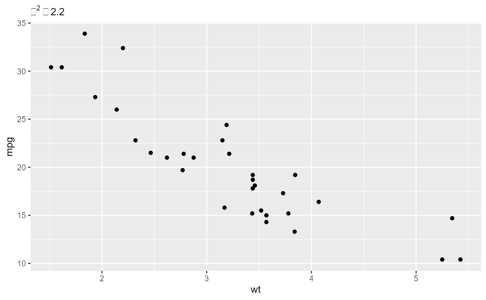

library(ggplot2) ggplot(mtcars, aes(wt, mpg)) + geom_point() + labs(subtitle = expression(chi^2==2.2))

Link: https://github.com/r-lib/pkgdown/issues/1282
x <- 1 + 2 x #> [1] 3
rmarkdown::pandoc_version() #> [1] '2.10.1'
sessioninfo::session_info() #> - Session info --------------------------------------------------------------- #> setting value #> version R Under development (unstable) (2020-09-04 r79137) #> os Windows 10 x64 #> system x86_64, mingw32 #> ui RTerm #> language (EN) #> collate English_United States.1252 #> ctype English_United States.1252 #> tz Europe/Berlin #> date 2020-09-08 #> #> - Packages ------------------------------------------------------------------- #> package * version date lib source #> assertthat 0.2.1 2019-03-21 [1] CRAN (R 4.1.0) #> backports 1.1.9 2020-08-24 [1] CRAN (R 4.1.0) #> cli 2.0.2 2020-02-28 [1] CRAN (R 4.1.0) #> colorspace 1.4-1 2019-03-18 [1] CRAN (R 4.1.0) #> cpp11 0.2.1 2020-08-11 [1] CRAN (R 4.1.0) #> crayon 1.3.4 2017-09-16 [1] CRAN (R 4.1.0) #> desc 1.2.0 2018-05-01 [1] CRAN (R 4.1.0) #> digest 0.6.25 2020-02-23 [1] CRAN (R 4.1.0) #> dplyr 1.0.2 2020-08-18 [1] CRAN (R 4.1.0) #> ellipsis 0.3.1 2020-05-15 [1] CRAN (R 4.1.0) #> evaluate 0.14 2019-05-28 [1] CRAN (R 4.1.0) #> fansi 0.4.1 2020-01-08 [1] CRAN (R 4.1.0) #> farver 2.0.3 2020-01-16 [1] CRAN (R 4.1.0) #> fs 1.5.0 2020-07-31 [1] CRAN (R 4.1.0) #> generics 0.0.2 2018-11-29 [1] CRAN (R 4.1.0) #> ggplot2 * 3.3.2 2020-06-19 [1] CRAN (R 4.1.0) #> glue 1.4.2 2020-08-27 [1] CRAN (R 4.1.0) #> gtable 0.3.0 2019-03-25 [1] CRAN (R 4.1.0) #> htmltools 0.5.0 2020-06-16 [1] CRAN (R 4.1.0) #> knitr 1.29 2020-06-23 [1] CRAN (R 4.1.0) #> labeling 0.3 2014-08-23 [1] CRAN (R 4.1.0) #> lifecycle 0.2.0 2020-03-06 [1] CRAN (R 4.1.0) #> magrittr 1.5.0.9000 2020-09-03 [1] Github (tidyverse/magrittr@15f6f07) #> memoise 1.1.0 2017-04-21 [1] CRAN (R 4.1.0) #> munsell 0.5.0 2018-06-12 [1] CRAN (R 4.1.0) #> pillar 1.4.6 2020-07-10 [1] CRAN (R 4.1.0) #> pkgconfig 2.0.3 2019-09-22 [1] CRAN (R 4.1.0) #> pkgdown 1.6.0 2020-09-07 [1] CRAN (R 4.1.0) #> purrr 0.3.4 2020-04-17 [1] CRAN (R 4.1.0) #> R6 2.4.1 2019-11-12 [1] CRAN (R 4.1.0) #> ragg 0.3.1 2020-07-03 [1] CRAN (R 4.1.0) #> rlang 0.4.7 2020-07-09 [1] CRAN (R 4.1.0) #> rmarkdown 2.3 2020-06-18 [1] CRAN (R 4.1.0) #> rprojroot 1.3-2 2018-01-03 [1] CRAN (R 4.1.0) #> rstudioapi 0.11 2020-02-07 [1] CRAN (R 4.1.0) #> scales 1.1.1 2020-05-11 [1] CRAN (R 4.1.0) #> sessioninfo 1.1.1 2018-11-05 [1] CRAN (R 4.1.0) #> stringi 1.4.6 2020-02-17 [1] CRAN (R 4.1.0) #> stringr 1.4.0 2019-02-10 [1] CRAN (R 4.1.0) #> systemfonts 0.3.0 2020-09-01 [1] CRAN (R 4.1.0) #> tibble 3.0.3 2020-07-10 [1] CRAN (R 4.1.0) #> tidyselect 1.1.0 2020-05-11 [1] CRAN (R 4.1.0) #> vctrs 0.3.4 2020-08-29 [1] CRAN (R 4.1.0) #> withr 2.2.0 2020-04-20 [1] CRAN (R 4.1.0) #> xfun 0.16 2020-07-24 [1] CRAN (R 4.1.0) #> yaml 2.2.1 2020-02-01 [1] CRAN (R 4.1.0) #> #> [1] C:/Users/inp099/Documents/R/win-library/4.1 #> [2] C:/Program Files/R/R-devel/library